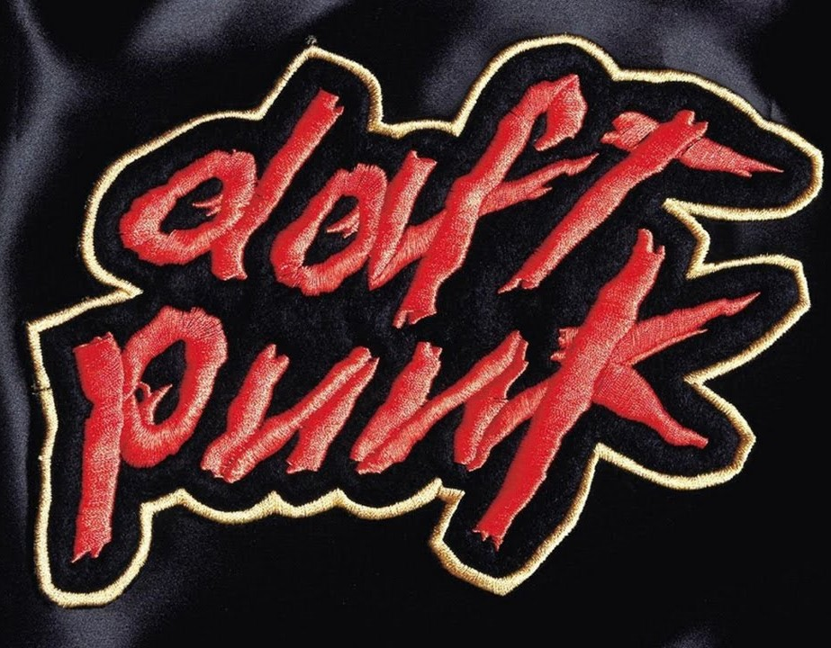
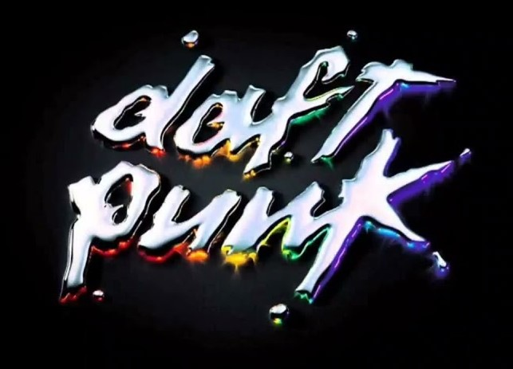
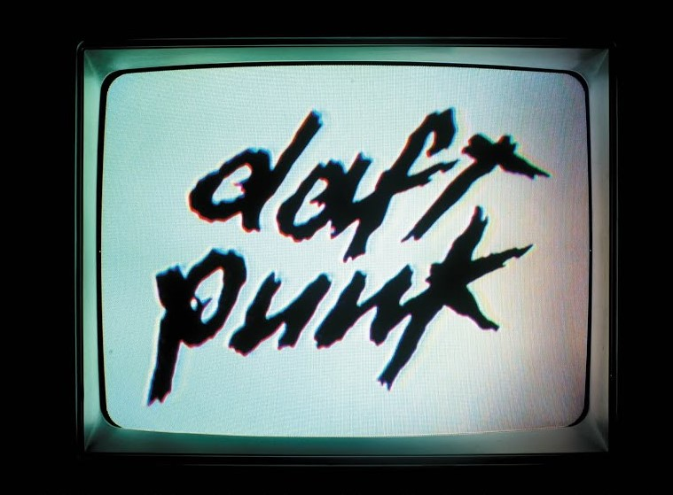
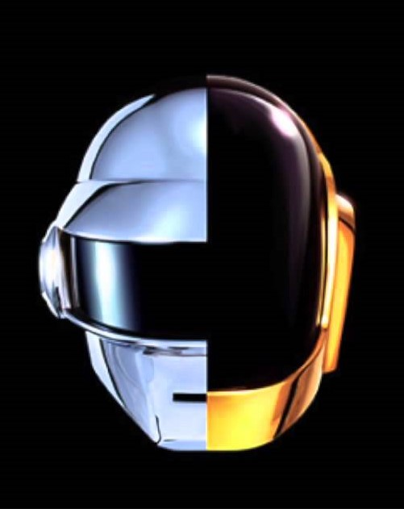

HOMEWORK

"Homework" é o álbum de estreia do Daft Punk, lançado em 1997. Este álbum foi um marco na cena da música eletrônica. É fortemente enraizado nos estilos de house e techno, com batidas pulsantes e sintetizadores cativantes. Os ritmos são muitas vezes repetitivos, criando uma atmosfera hipnótica característica do Daft Punk.
DESTAQUES
Daftendirekt, Around the World, Da Funk, Revolution 909
DISCOVERY

"Discovery" é o segundo álbum de estúdio do Daft Punk, lançado em 2001. Este álbum marcou uma mudança significativa no estilo musical da dupla em comparação com seu álbum de estreia "Homework". O álbum é notável por sua exploração de uma ampla gama de estilos musicais, incluindo música disco, funk, pop e elementos de música eletrônica mais acessível. Além disso, o álbum faz um uso extensivo de samples, incorporando elementos de músicas antigas e transformando-os em algo novo.
DESTAQUES
One More Time, Digital Love, Harder Better Faster Stronger, Aerodynamc
ANIMAÇÃO
Em parceria com o diretor de animação japonês Leiji Matsumoto, Daft Punk produziu uma animação chamada "Interstella 5555: The 5tory of the 5ecret 5tar 5ystem", que serve como uma espécie de filme visual para o álbum. Cada faixa do álbum corresponde a uma parte da história visual, criando uma narrativa única.
HUMAN AFTER ALL

"Human After All" é o terceiro álbum de estúdio do Daft Punk, lançado em 2005. Este álbum é notável por sua abordagem minimalista e repetitiva, marcando uma mudança significativa em relação ao estilo diversificado e acessível de "Discovery". Ele é caracterizado por uma abordagem minimalista, com faixas que muitas vezes apresentam batidas repetitivas e linhas de sintetizador simples. O álbum tem um som mais cru e direto em comparação com os lançamentos anteriores da dupla. Elementos robóticos e distorcidos são proeminentes, contribuindo para uma atmosfera mais áspera e mecânica.
DESTAQUES
Human After All, Robot Rock, Technologic
MÁ RECEPÇÃO
"Human After All" recebeu críticas mistas devido à sua abordagem minimalista, com alguns fãs e críticos expressando desapontamento em relação à aparente simplicidade das faixas.
RANDOM ACCESS MEMORIES

"Random Access Memories" é o quarto álbum de estúdio do Daft Punk, lançado em 2013. Este álbum representa uma mudança significativa no estilo musical da dupla, afastando-se do som mais eletrônico e sintético de álbuns anteriores para abraçar elementos mais orgânicos e influências da música disco dos anos 1970 e 1980. O álbum apresenta colaborações com vários artistas, incluindo Pharrell Williams, Nile Rodgers, Giorgio Moroder e outros, contribuindo para a diversidade musical do projeto.
DESTAQUES
Get Lucky, Instant Crush, Giorgio by Moroder, Doin'it Right
PREMIAÇÕES
O álbum recebeu vários prêmios Grammy, incluindo Álbum do Ano, e "Get Lucky" ganhou o prêmio de Gravação do Ano, além da quebra de expectativa do público devido ao álbum "Human After All"